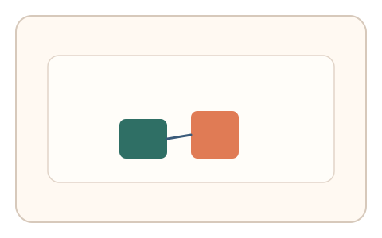

#171
Reverse Brainstorming - Round 3
已扩展
传感器一致性校核
融合指针、姿态与触控等多源信号，检查跨传感器时间一致性。
概念原文
融合指针事件与设备姿态/触控/滚动等多源信号，检查跨传感器时间一致性并做异常检测。
模拟器需要同步伪造多个通道的一致性，显著提高攻击成本。
研究背景
真实设备多传感器具有同步结构，模拟器需要同时伪造多通道一致性。跨传感器校核可显著抬高攻击成本。
核心机制
- 采集指针、姿态、触控等多源信号。
- 对齐时间轴并计算一致性。
- 分析相位差与漂移。
- 与设备基线比对输出判定。
用户流程
- 步骤 1：用户完成短交互产生多源信号。
- 步骤 2：系统对齐多通道时间线。
- 步骤 3：系统评估一致性并判定。
判定信号
跨传感器时间一致性
真实设备信号具有同步结构。
相位偏移与漂移
一致性偏移反映真实在场。
判定逻辑
一致性得分需在基线范围；时间对齐异常判异常。
对抗面
- 伪造单一传感器信号
- 脚本同步生成多通道事件
防御与缓解
- 随机化采样窗口与触发条件
- 加入微扰与交叉验证
- 对异常同步进行二次校验
可达性与风险
对无传感器设备提供替代通道。
- 权限受限导致信号缺失
- 设备噪声影响一致性评分
可视化状态

状态 1：多源采集
采集指针与姿态信号。

状态 2：时间对齐
对齐多通道时间线。

状态 3：一致性判定
计算跨通道一致性得分。
参考资料
Sensor fusion
说明多传感器一致性与融合。
Inertial measurement unit
说明姿态传感器与运动信号。